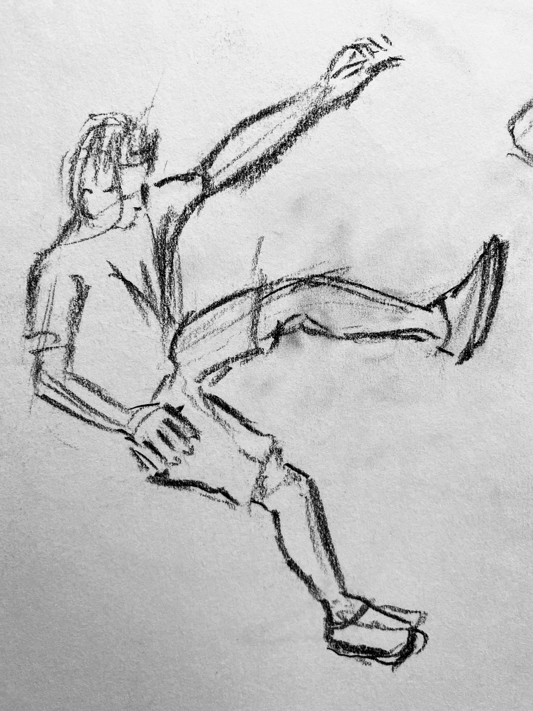
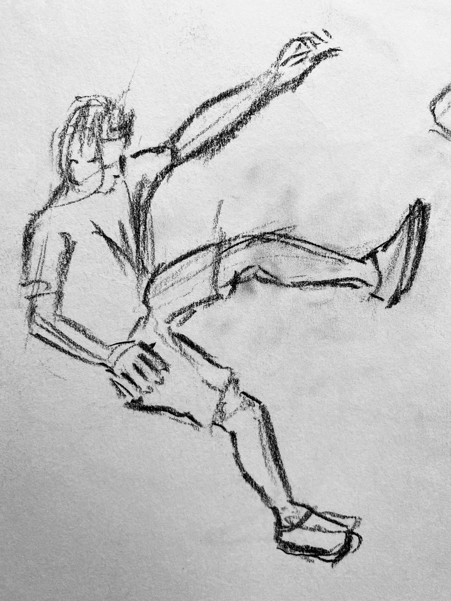

> I was born in London and have only just arrived back after two years travelling and working in Canada.
> I’m passionate about everything bikes, from riding to repairing and building, I have spent the last two years volunteering at various community bike shops from Recyclistas in Victoria BC to Santrovelo in Montreal QC.
> I’ve always been curious in how things work from the mechanics in bikes and now more recently to coding.
> Coding is something that I first attempted to learn when I was 14 where I attempted to build an RPG in processing and now years later I have come back to.
> During my time in Montreal particularly, I took part in a French course for newcomers to Quebec and being in such a diverse learning community inspired me hugely. I started learning some coding, following online tutorials and resources and built a basic game using the P5Js library. Upon returning to the UK I wanted to find a community which could focus my learning and help me reach that next step.> I was introduced to Founders and Coders by my friend Ivo who finished the course last year.
> Immediately it was clear to me that FAC would be a great direction to take, where it’s ethos and mission aligns with my own.
> The diverse community and equal opportunity spirit is something that I treasured back in Montreal and hope to promote and participate in going forward.
> The team and project based approach also speaks to my way of learning where purposeful problem solving in groups allows for more complete understanding.
> Climate change is a reality that we all are going to face and need systematic change to combat.
> It’s the area that I want to invest my time in the future.
> I’m a believer in the cultural transformative nature of storytelling and I believe that coding has unique potential for interactive, responsive climate communication and understanding.
> I want to be able to build and help organisations and grassroots movements with apps and websites to aid in that goal.
> It excites me that the more I learn, the more opportunities and ideas I will have to promote and engage people in this goal.
> I'm also learning to draw and I try to sketch daily. Here are some of the pages from my sketchbook.


 



For fun I've also made several short concept films with a friend which are published under the name Mystery Cedar